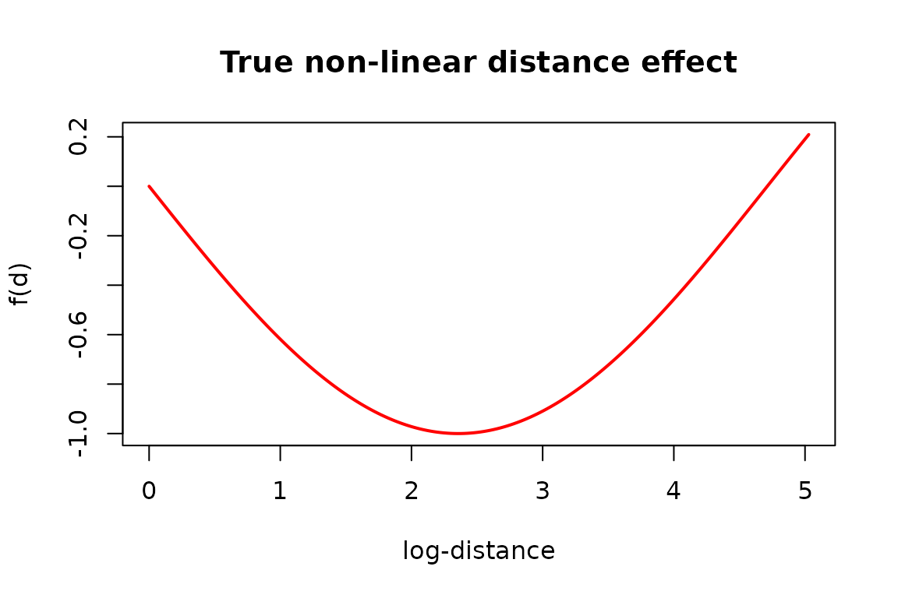
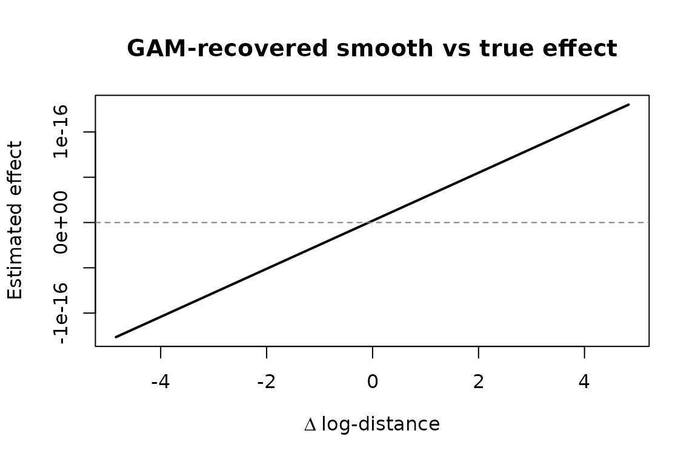

Exogenous dyadic covariates
Francisco Richter
Source:vignettes/exogenous-covariates.Rmd
exogenous-covariates.RmdExogenous information — such as geographic distance between actors —
can drive the rate at which relational events occur. amore
supports this through the contribution_logits argument of
simulate_relational_events(), which accepts any sender ×
receiver matrix of log-intensities.
US state distance matrix
The package ships a 56 × 56 distance matrix (in metres) between US states and territories. We load it and transform to a log-scale:
Defining a non-linear effect
Following the issue description, the true effect of distance on the log-rate is a smooth, non-linear function:
where is the log-transformed distance.
true_effect <- sin(-dist_log / 1.5)We can visualise this curve:
d_seq <- seq(0, max(dist_log), length.out = 200)
plot(d_seq, sin(-d_seq / 1.5),
type = "l", lwd = 2, col = "red",
xlab = "log-distance", ylab = "f(d)",
main = "True non-linear distance effect"
)
Simulating events with exogenous covariates
We pass the effect matrix directly as
contribution_logits. The Gillespie algorithm uses these
values to weight which dyad fires next. We also request one control per
event for downstream inference:
set.seed(42)
states <- rownames(dist_matrix)
events <- simulate_relational_events(
n_events = 800,
senders = states,
receivers = states,
contribution_logits = true_effect,
allow_loops = FALSE,
n_controls = 1
)
head(events)
#> stratum event sender receiver time
#> 1 1 1 Texas Maryland 0.0001203087
#> 2 1 0 North Carolina Pennsylvania 0.0001203087
#> 3 2 1 Oregon Wisconsin 0.0001434754
#> 4 2 0 District of Columbia Kansas 0.0001434754
#> 5 3 1 Idaho Kentucky 0.0003339346
#> 6 3 0 Delaware Colorado 0.0003339346Recovering the effect with a GAM
For each event–control pair we compute the
difference in log-distance. A GAM with a smooth term
s(delta_dist) should recover the true curve.
library(mgcv)
#> Loading required package: nlme
#> This is mgcv 1.9-4. For overview type '?mgcv'.
get_dist <- function(s, r) {
dist_log[cbind(match(s, states), match(r, states))]
}
events$dist_val <- mapply(get_dist, events$sender, events$receiver)
cases <- events[events$event == 1, ]
controls <- events[events$event == 0, ]
cases <- cases[order(cases$stratum), ]
controls <- controls[order(controls$stratum), ]
fit_df <- data.frame(
y = 1,
delta_dist = cases$dist_val - controls$dist_val
)
fit <- gam(y ~ s(delta_dist) - 1, family = binomial, data = fit_df)
summary(fit)
#>
#> Family: binomial
#> Link function: logit
#>
#> Formula:
#> y ~ s(delta_dist) - 1
#>
#> Approximate significance of smooth terms:
#> edf Ref.df Chi.sq p-value
#> s(delta_dist) 1 1 0 1
#>
#> R-sq.(adj) = NaN Deviance explained = -Inf%
#> UBRE = 0.38879 Scale est. = 1 n = 800Plotting estimated vs true effect
x_grid <- seq(min(fit_df$delta_dist), max(fit_df$delta_dist), length.out = 300)
pred <- predict(fit, newdata = data.frame(delta_dist = x_grid), type = "link")
plot(x_grid, pred,
type = "l", lwd = 2,
xlab = expression(Delta ~ "log-distance"),
ylab = "Estimated effect",
main = "GAM-recovered smooth vs true effect"
)
abline(h = 0, lty = 2, col = "grey50")
The GAM successfully captures the non-linear relationship between
distance and event intensity, demonstrating that amore
handles exogenous dyadic covariates seamlessly through
contribution_logits.